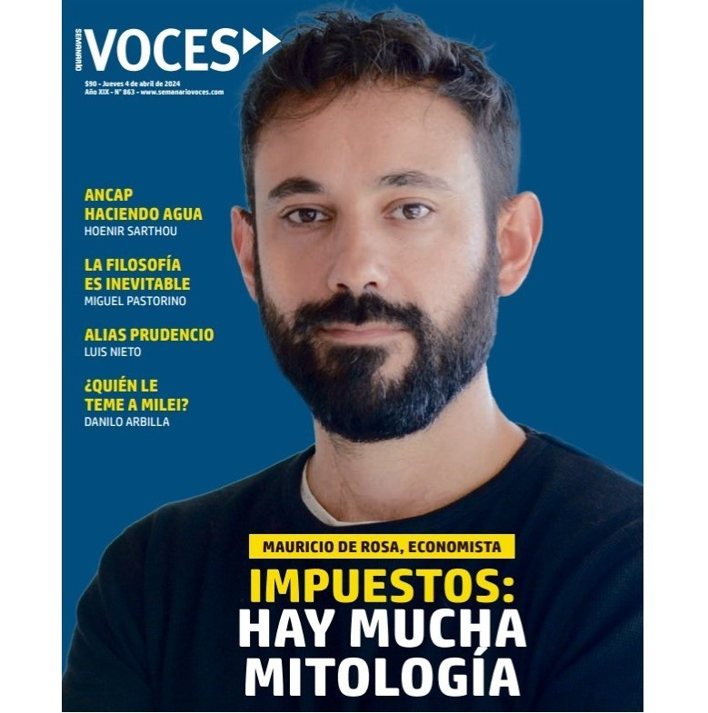
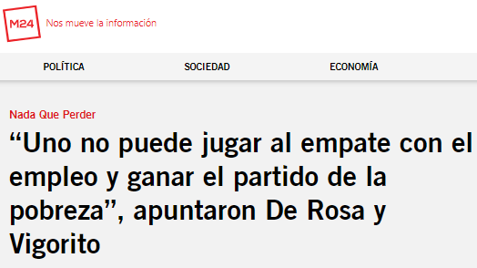
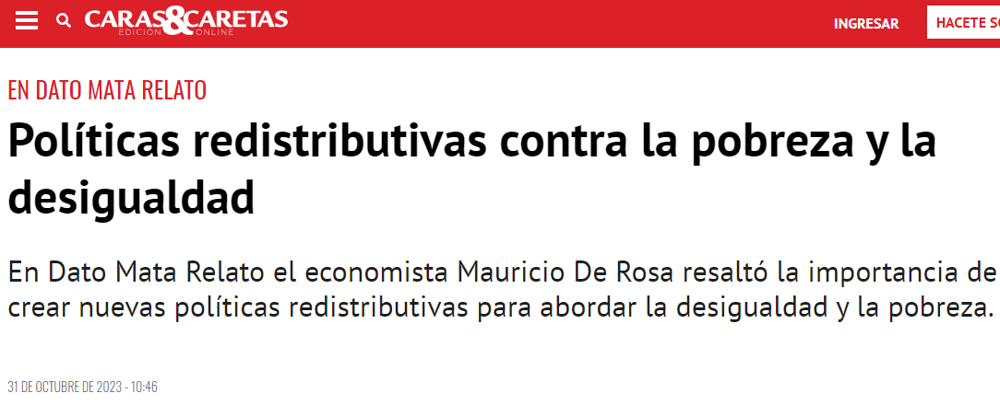
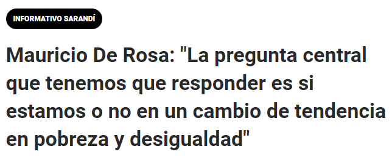
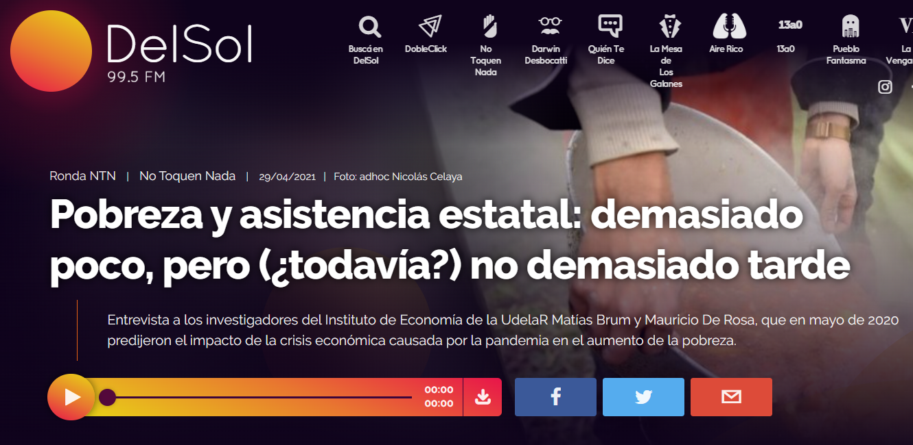
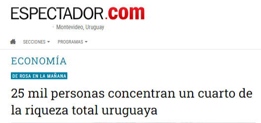
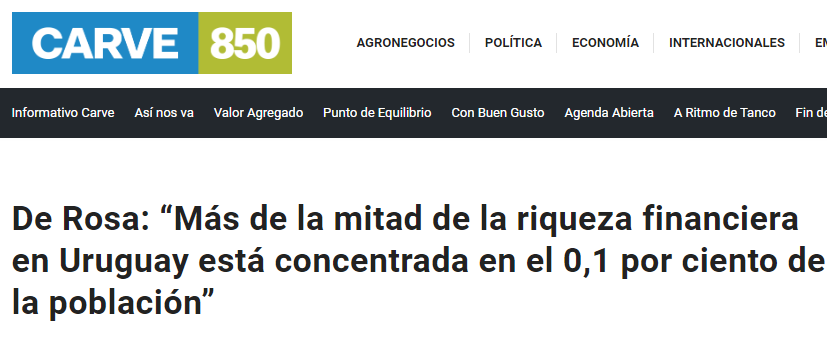

Aparición en
Medios
Aparición en medios

#LaLetraChica🗣️@mauriderosa: "La pobreza crece durante la pandemia y luego tiene dos caídas consecutivas pero que dejan aún, unas 42 mil personas más por debajo de la línea de pobreza que en 2019" pic.twitter.com/JZdskt3KWc
— La Letra Chica (@laletrachicatv) April 18, 2023






Prensa escrita